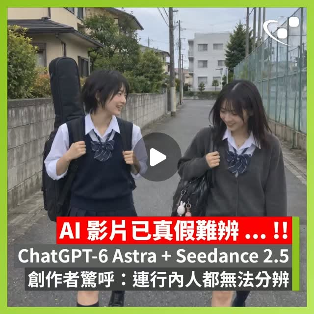

Threads｜GPT-6 Astra 與 Seedance 2.5 協同生成影片：真假難辨說法的查核筆記

一句話摘要
這則 Threads 貼文宣稱「ChatGPT-6 Astra＋Seedance 2.5」的影像到影片工作流，已讓 AI 影片逼真到專業人士也難以辨識；但目前可查到的公開證據不足，本文將它保留為媒體／社群轉述，並與官方可確認的資料分開。
原始貼文脈絡
HKEPC（`@hkepc`）在 Threads 發文，轉述海外 AI 影片創作者 **HAL2400_AI** 的測試心得。貼文的核心說法是：
- 先使用名為「ChatGPT-6 Astra」的模型生成高細節靜態畫面。
- 再把靜態畫面導入「Seedance 2.5」進行動態影片渲染與幀間最佳化。
- 結果在材質紋理、動態模糊、光影與物理一致性上有顯著提升。
- 創作者因此表示，未來可能連專業人士也難以分辨真實與 AI 影片。
這是貼文的轉述內容，不等同於 OpenAI 或 ByteDance 的正式產品公告，也沒有在貼文中提供可重現的完整操作流程、模型頁面或測試基準。
這個工作流在概念上代表什麼？
若不先接受其中的產品名稱與性能宣稱，單看方法論，貼文描述的是一種常見的多模態製作流程：
- **靜態畫面階段**：先處理角色外觀、構圖、場景、材質、光線與鏡頭語言。
- **動態化階段**：再由影片模型依照畫面與文字指令產生運動、鏡頭移動與時間連續性。
- **後製與挑片階段**：檢查臉部、手部、背景文字、物理接觸、前後景速度與光影是否合理。
這種「先定格視覺，再生成動態」的拆分，確實有助於控制畫面方向；但它不代表每次都能得到穩定、可播出或可商用的結果。
公開資料查核結果
### GPT-6 Astra
我檢查了 OpenAI 公開網站的搜尋結果，沒有找到可對應「GPT-6 Astra」的正式模型公告、產品頁或官方技術文件。因此本文不把「Astra 就是 GPT-6」或「已公開提供影片生成能力」視為已證實事實。
貼文串中的其他留言也出現「OpenAI 新模型 Astra」「GPT-6」等二次轉述，但這些仍是社群內容，不能取代官方來源。
### Seedance 2.5
ByteDance Seed 官方搜尋結果可找到 **Seedance 2.0** 的官方頁面，頁面描述其支援以文字、圖片、影片及音訊作為參考，進行多模態影片創作；但在本次查核中，沒有找到能確認「Seedance 2.5」的官方產品頁。
因此，`Seedance 2.5` 可能是未公開版本、社群誤稱、測試名稱，或媒體轉述中的版本差異；目前不能直接當作正式公開模型。
社群回應也提醒了什麼？
原串文中的回應並不一致：
- 有人認為影片仍可從臉部、光影、動作時間感與前後景運動看出 AI 痕跡。
- 有人指出「語言模型」本身不等於「影片生成模型」，大型語言模型可能只是負責撰寫提示詞或串接工作流。
- 也有人把重點放在工具與 Skill 的組合，而不是單一模型名稱。
這些回應反映一個重要查核原則：影片看起來很逼真，不能單獨證明使用了貼文宣稱的模型，也不能證明模型具備完整的端到端影片生成能力。
使用與查核建議
看到「AI 已經真假難辨」的影片時，可以依序檢查：
- 是否有原始影片檔，而不只是轉載剪輯？
- 是否公開模型名稱、版本、生成參數與完整提示詞？
- 是否有生成前後對照、失敗案例與未剪輯過程？
- 手部、臉部、文字、反射、陰影、物理接觸是否連續？
- 是否把語言模型、圖像模型與影片模型的角色混在一起？
- 是否能在官方產品頁或技術文件找到相同版本名稱？
- 商業使用前，是否確認人物肖像、素材、音樂與訓練資料相關權利？
查核結論
- **已確認**：HKEPC Threads 貼文存在，且確實提到 ChatGPT-6 Astra、Seedance 2.5 與 HAL2400_AI 的測試說法。
- **官方可對應資料**：本次檢查到 ByteDance Seed 官方的 Seedance 2.0 頁面。
- **尚未確認**：GPT-6 Astra 是否為 OpenAI 正式公開模型；Seedance 2.5 是否為 ByteDance 正式公開版本；影片是否真的由兩者依貼文所述流程產出。
- **本文採用原則**：把這則內容保存為值得追蹤的 AI 影片生成傳聞／案例，不把「真假難辨」或模型版本宣稱寫成已驗證能力。
延伸貼文：GPT-6 Astra × Seedance 2.5 1080p
Threads 使用者 **will.h.jin／AI Threads** 後續分享另一段影片，文字更直接寫成「到今天這一刻，真人演電影的時代正式結束」，並標註 `@openai`、`@dreamina_ai`、`@higgsfield.ai`，宣稱使用 GPT-6 Astra、Seedance 2.5 與 1080p 製作。
這則貼文的價值在於，它展示了同一套敘事如何被進一步包裝成「真人演員時代結束」的產業結論；但貼文本身沒有提供模型版本證明、製作參數、原始影片檔、生成紀錄或可重現流程。因此：
- **可確認**：貼文存在，且確實標註上述帳號與工具名稱；貼文約有 4.3 萬次瀏覽。
- **不可直接確認**：影片是否真的由 GPT-6 Astra 與 Seedance 2.5 依標註方式共同製作。
- **不可由單一影片推導**：真人演員或電影製作時代已經結束。
- **查核提醒**：先前同系列查核仍成立——未找到可對應 GPT-6 Astra 的 OpenAI 官方公告；ByteDance 官方可對應的是 Seedance 2.0，而非本貼文的 Seedance 2.5。
原串文留言也多次提到影片具有「沙丘」或既有電影的視覺既視感，這提醒我們還要區分：模型能力、參考素材、風格模仿，以及宣傳文案所造成的震撼感，不能全部混為同一件事。
原始與相關連結
- Threads 分享連結：<https://www.threads.com/share/_95U-kwT0/>
- Threads canonical：<https://www.threads.com/@hkepc/post/Dc_ZfW4DWBS>
- ByteDance Seed 官方 Seedance 2.0：<https://seed.bytedance.com/en/seedance2_0>
- 相關 Threads 討論：<https://www.threads.com/@ai9_studio/post/DdBzMPniRfw>
- OpenAI 官方網站：<https://openai.com/>
- 延伸 Threads 分享：<https://www.threads.com/share/_6QaB0bgt/>
- 延伸貼文 canonical：<https://www.threads.com/@will.h.jin/post/Dc-YY6tEYwr>
- 延伸相關案例：<https://www.threads.com/@al34creative/post/Db2ef3NGEiT>、<https://www.threads.com/@cosmic_bone_hk/post/DbzjD0Pk_nq>、<https://www.threads.com/@turqayjfrv/post/Db2eRKnCDiJ>